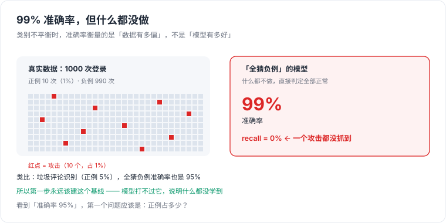
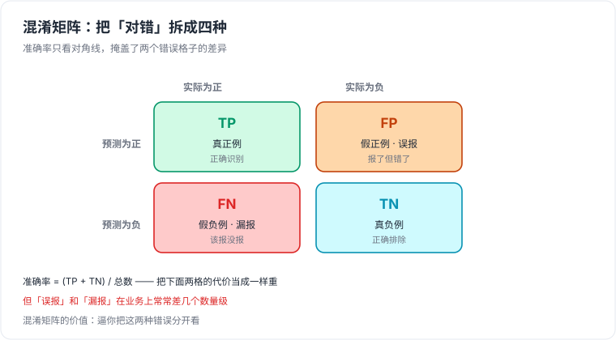
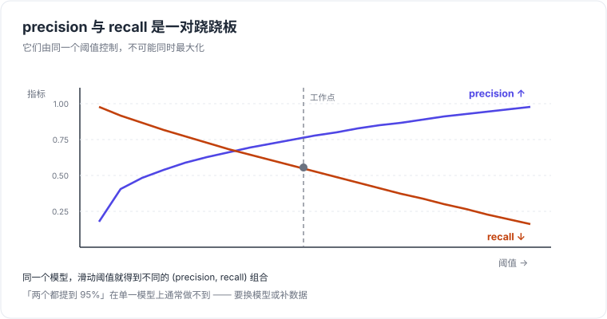

这是「写给工程师的机器学习入门」系列第 5 篇。 前面四篇讲的是「系统怎么搭」。这篇讲一个更基础的问题： 你怎么知道它到底好不好？
结论先说
三句话：
- 准确率只看「猜对了多少」，不看「错在哪」，类别不平衡时会严重失真
- precision 和 recall 是一对跷跷板，调阈值必然此消彼长
- 选哪个指标由业务代价决定，不是由哪个数字好看决定
一、一个荒谬但常见的例子
假设你要做一个「异常登录检测」，1000 次登录里有 10 次是攻击。
现在有一个什么都不做的模型：把每一次登录都判定为「正常」。
它的准确率是：
猜对 990 次 / 总共 1000 次 = 99%99% 准确率，但它一个攻击都没抓到。

*图 1：左边 300 个格子代表 1000 次登录，红点是那 10 次攻击；右边是全猜负例的成绩单——准确率 99%，recall 0%。*
这就是类别不平衡下的经典陷阱：当负例占绝对多数时，全部猜负例就能得到很高的准确率，而这个模型毫无用处。
真实场景里这种比例很常见：
| 场景 | 正例占比 | 全猜负例的准确率 |
|---|---|---|
| 异常登录检测 | 1% | 99% |
| 疾病筛查（罕见病） | 0.5% | 99.5% |
| 垃圾评论识别 | 5% | 95% |
| 工业质检（缺陷率） | 2% | 98% |
所以看到「准确率 95%」，第一个该问的问题是：正例占多少？
二、混淆矩阵：把「对错」拆成四种
要看清模型错在哪，得把预测结果拆开。二分类有四种可能：

*图 2：真正例 / 假正例 / 假负例 / 真负例 —— 准确率只算对角的两个格子。*
| 实际为正 | 实际为负 | |
|---|---|---|
| 预测为正 | TP（真正例） | FP（假正例，误报） |
| 预测为负 | FN（假负例，漏报） | TN（真负例） |
准确率只看对角线上两个格子（TP + TN），把 FP 和 FN 一视同仁地算作「错」。
但现实中，误报和漏报的代价往往差几个数量级：
- 垃圾邮件误判：一封正常邮件进了垃圾箱（用户可能永远看不到）
- 欺诈交易漏判：一笔欺诈通过了（直接损失钱）
这两件事能等价吗？显然不能。混淆矩阵的价值就是逼你把它们分开看。
三、从混淆矩阵推出三个指标
Precision（精确率）：我报出来的，有多少是真的？
precision = TP / (TP + FP)分母是「所有被我判定为正的」。它回答：报警里有多少是真的。
低 precision 意味着「狼来了」——报太多假警，用户会开始忽略告警。
Recall（召回率）：该报的，我报出了多少？
recall = TP / (TP + FN)分母是「所有实际为正的」。它回答：真正的目标我抓到了几成。
低 recall 意味着「漏」——该发现的问题没发现。
F1：两者的调和平均
F1 = 2 × (precision × recall) / (precision + recall)用调和平均而不是算术平均，是因为它惩罚极端值：precision 1.0、recall 0.1 的模型，算术平均 0.55，但 F1 只有 0.18。这更符合直觉——偏科的系统就是不好。
四、为什么它们必然此消彼长
这是最容易忽略的一点：precision 和 recall 不是独立的，它们由同一个阈值控制。

*图 3：阈值调高 → 更保守 → precision 上升、recall 下降；调低则相反。*
| 阈值调整 | precision | recall | 直觉 |
|---|---|---|---|
| 调高（更严格） | ↑ | ↓ | 只报很有把握的，准但漏 |
| 调低（更宽松） | ↓ | ↑ | 宁可错报不可漏报，全但杂 |
所以「把 precision 和 recall 都提到 95%」这种要求，在同一个模型上通常做不到——除非换模型或改数据。
正确问法是：「在我能接受的误报率下，recall 最高能到多少？」这才是一个可以优化的问题。
五、业务决定选哪个
同样是二分类，不同场景的取舍完全相反：
| 场景 | 更该保哪个 | 理由 |
|---|---|---|
| 癌症筛查 | recall | 漏诊的代价远大于复查的成本 |
| 垃圾邮件过滤 | precision | 正常邮件被误删，用户会愤怒 |
| 欺诈检测 | 看金额 | 大额偏 recall，小额偏 precision |
| 内容审核 | 看合规要求 | 监管严格时偏 recall（宁可错杀） |
一个实用做法：先把代价写下来，再选指标。
漏报一次欺诈 → 平均损失 5000 元
误报一次 → 人工核查成本 50 元
→ 漏报代价是误报的 100 倍
→ recall 优先，precision 可以放宽到 30%这样算完，指标选择就不是「哪个数字好看」，而是有依据的。
六、RAG 里也是同一套逻辑
这套东西不只用于分类。检索系统里的两个指标本质相同：
| 检索术语 | 对应分类指标 | 含义 |
|---|---|---|
| 召回率 Recall@K | recall | 所有相关文档里，被检索到多少 |
| 精确率 Precision@K | precision | 检索出的 K 条里，有多少相关 |
而且它们的取舍关系更直接——K 越大，召回越高、精确越低：
K = 3 → 召回 55%，但 3 条里大概 2 条相关
K = 20 → 召回 92%，但 20 条里可能只有 4 条相关RAG 场景的特殊之处在于：送进 LLM 的上下文窗口是有限的。塞 20 条不相关的片段，不仅浪费 token，还会干扰模型判断（context pollution）。
所以 RAG 里通常不是「越大越好」，而是找一个 K 让 recall 够用的同时 precision 别太低。这也是为什么「重排序（rerank）」有价值——它能在不增大 K 的前提下提高 precision。
七、三个常见误用
1. 只看一个数字就下结论
「准确率 95%，效果不错」——先问正例占比、再问混淆矩阵。一个数字永远不够。
2. 用训练集指标评估
模型在训练数据上表现好是必然的。评估必须用没见过的数据，否则测的是记忆能力。
3. 整体指标掩盖了分层差异
总 recall 80%，听起来还行。但拆开看可能是：
类别 A（样本多）：recall 95%
类别 B（样本少）：recall 30% ← 少数类被牺牲了一定要按类别拆开看，尤其是你真正关心的那个类别。
八、一个可执行的评估流程
① 先看数据分布：正例占比多少？够不够训练？
↓
② 建一个「全猜负例」的基线：准确率是多少？
如果模型打不过这个基线，说明它什么都没学到
↓
③ 算混淆矩阵：误报和漏报各多少？
↓
④ 按业务代价选指标：recall 优先还是 precision 优先？
↓
⑤ 调阈值到合适的工作点，而不是追求最大值
↓
⑥ 按类别拆开验证，确认没有被平均掉的短板第 ② 步最容易被跳过，但它能一眼戳穿「看起来不错的模型」。
本篇小结
- 准确率在不平衡数据上会骗人，先看分布再看数字
- precision 和 recall 由同一阈值控制，必然此消彼长
- 指标选择由业务代价决定，把代价写下来再选
下一篇预告
《从零跑通一个最小的机器学习流程》
下一篇是系列的收尾：用一份真实的小数据集，从划分训练/测试集、训练模型、评估、到保存与调用，走完一遍完整流程——不讲公式，只讲每一步在做什么、容易错在哪。
---
关于作者
本文是「写给工程师的机器学习入门」系列第 5 篇。作者 PHclaw 在做 AgentFlow——一个自托管 AI Agent 平台，知识库检索与产物交付都在真实代码里。
- 源码：https://github.com/PHclaw/agentflow
- 在线演示：http://159.75.21.251:3000
- 文档：https://phclaw.github.io/agentflow/
- 全部文章：https://phclaw.github.io/blog/
对评估指标有不同看法，欢迎在 Discussions 里讨论。